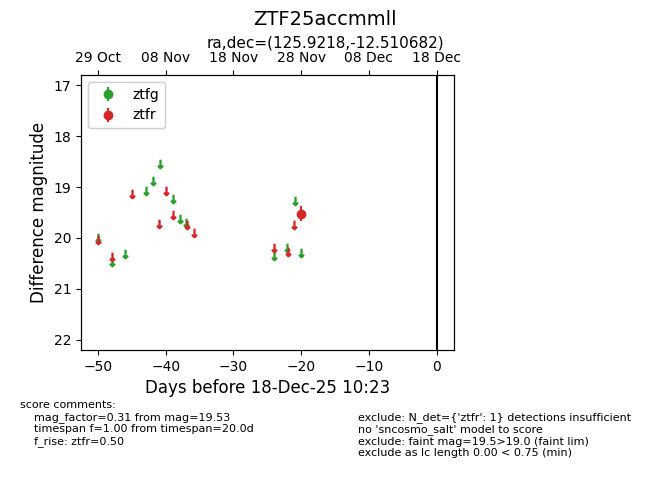
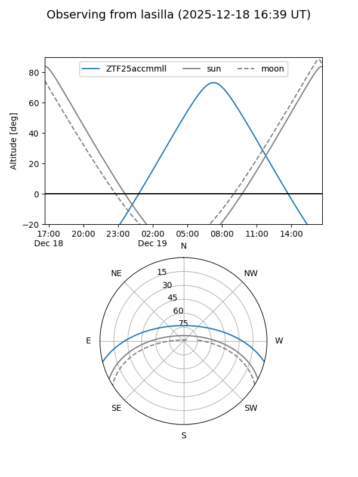
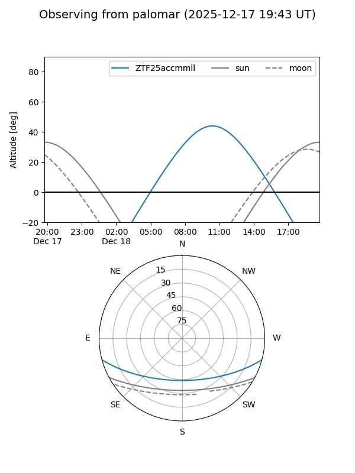

ZTF25accmmll
Target ZTF25accmmll at 2025-12-18 11:17
Aliases and brokers:
FINK: fink-portal.org/ZTF25accmmll
Lasair: lasair-ztf.lsst.ac.uk/objects/ZTF25accmmll
ALeRCE: alerce.online/object/ZTF25accmmll
alt names
ZTF25accmmll (ztf,fink_ztf)
Coordinates:
equatorial (ra, dec) = 125.9218,-12.51068
equatorial (HMS+DMS) = 08:23:41.24,-12:30:38.45
galactic (l, b) = (235.1653,+13.98002)
Photometry
last ztfr=19.53
1 ztfr detections
Lightcurve

Visibility


Additional plots